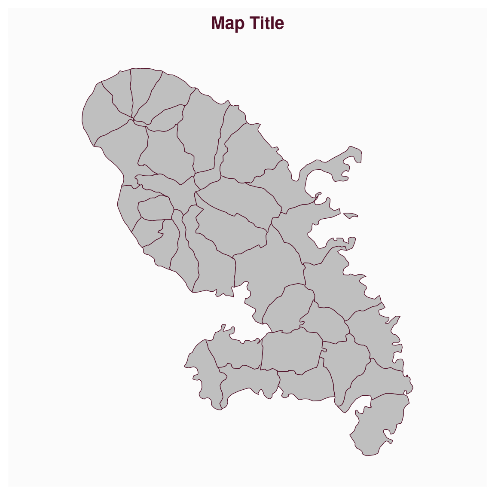
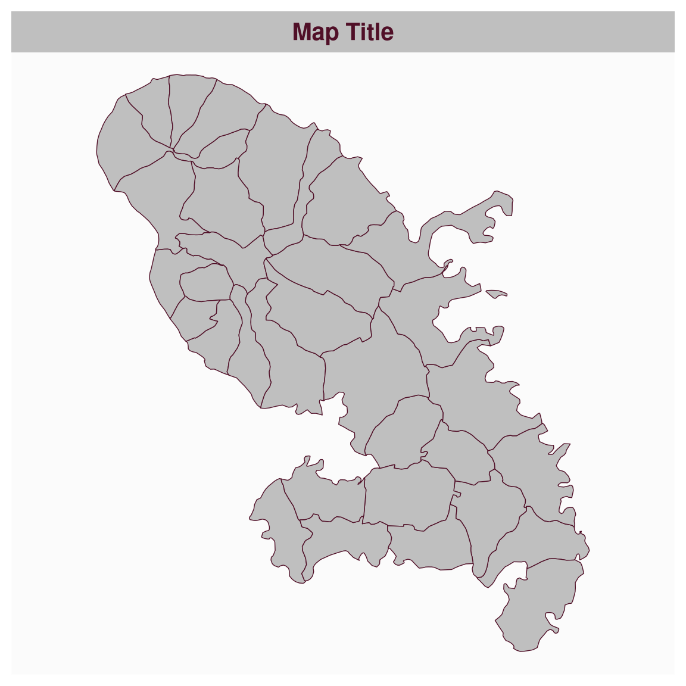
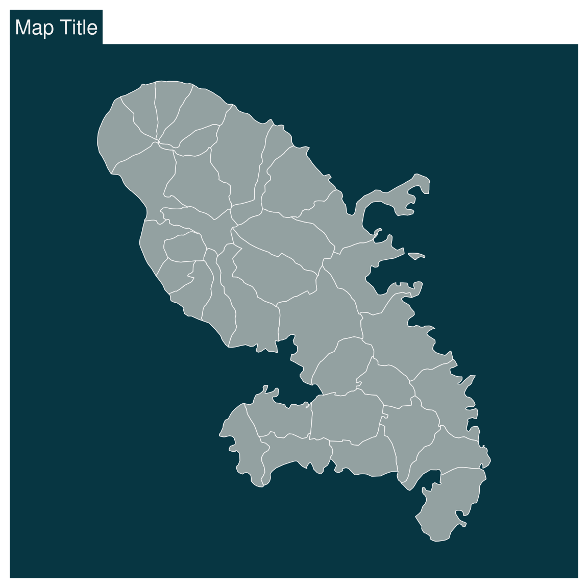
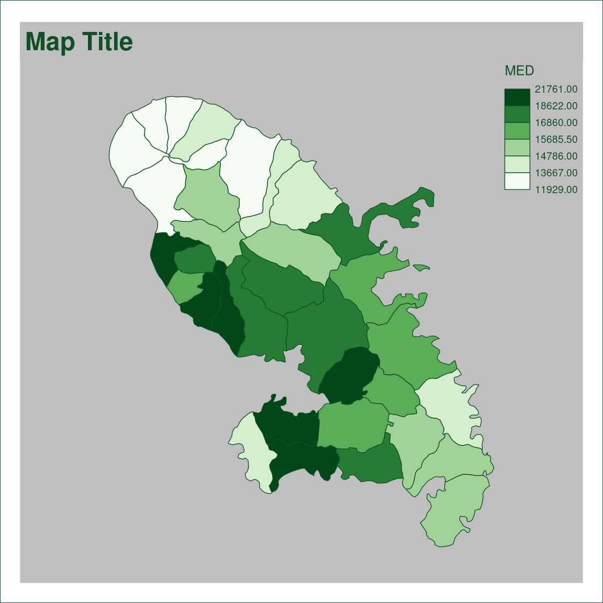

A theme is a set of graphical parameters that are applied to maps created
with mapsf. These parameters are:
figure margins and frames,
background, foreground and highlight colors,
default sequential and qualitative palettes,
title options (position, size, banner...).
mapsf offers some builtin themes. It's possible to modify an existing theme
or to start a theme from scratch. It is also possible to set a custom theme
using a list of arguments
Themes are persistent across maps produced by mapsf
(e.g. they survive a dev.off() call).
Use mf_theme(NULL) or mf_theme('base') to reset to default theme
settings.
Usage
mf_theme(
x,
mar,
foreground,
background,
highlight,
title_tab,
title_pos,
title_inner,
title_line,
title_cex,
title_font,
title_banner,
frame,
frame_lwd,
frame_lty,
pal_quali,
pal_seq,
...
)Arguments
- x
name of a map theme. One of "base", "sol_dark", "sol_light", "grey", "mint", "dracula", "pistachio", "rzine".
- mar
margins
- foreground
foreground color
- background
background color
- highlight
highlight color
- title_tab
if TRUE the title is displayed as a 'tab'
- title_pos
title position, one of 'left', 'center', 'right'
- title_inner
if TRUE the title is displayed inside the plot area.
- title_line
number of lines used for the title
- title_cex
cex of the title
- title_font
font of the title
if TRUE the title is displayed as a banner
- frame
either "none", "map" or "figure"; plot a frame around the map or the figure.
- frame_lwd
line width for the frame
- frame_lty
line type for the frame
- pal_quali
default qualitative color palette (name or function)
- pal_seq
default sequential color palettte (name or function)
- ...
deprecated arguments ('bg', 'fg', 'tab', 'pos', 'inner', 'line', 'cex' and 'font'). See the Note section.
Note
Although the map theming system has been radically changed in version 1.0.0
of the package, you can still use the old themes by referencing them by name.
If you need to use the pre v1.0.0 default theme, set x to "default".
If an old theme is set, only deprecated arguments are used and others are ignored.
If current and deprecated arguments are mixed, only deprecated arguments are used and others are ignored.
All references and usages of the old theming system will be removed in the next major version.
Examples
mtq <- mf_get_mtq()
# Choosing a theme by name:
mf_theme("base")
mf_map(mtq)
mf_title()

# Specifying some values directly:
mf_theme(title_banner = TRUE)
mf_map(mtq)
mf_title()

# Using a mix of the above:
mf_theme("sol_dark", title_tab = TRUE, title_font = 1)
mf_map(mtq)
mf_title()

# Specifying a list with theme values:
theme <- list(
mar = c(1, 1, 3, 1),
title_tab = FALSE,
title_pos = "left",
title_inner = FALSE,
title_line = 2,
title_cex = 1.5,
title_font = 2,
title_banner = FALSE,
frame = "figure",
frame_lwd = 1,
frame_lty = 1,
foreground = "#fbfbfb",
background = "grey75",
highlight = "#0f5027",
pal_quali = "Dark 3",
pal_seq = "Greens"
)
mf_theme(theme)
mf_map(mtq, "MED", "choro")
mf_title()

# Obtaining a list of parameters for the current theme:
current_theme <- mf_theme()
# Use default theme:
mf_theme(NULL)
# or
mf_theme("base")